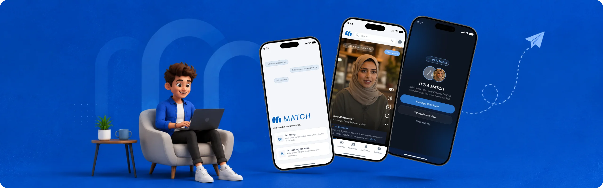
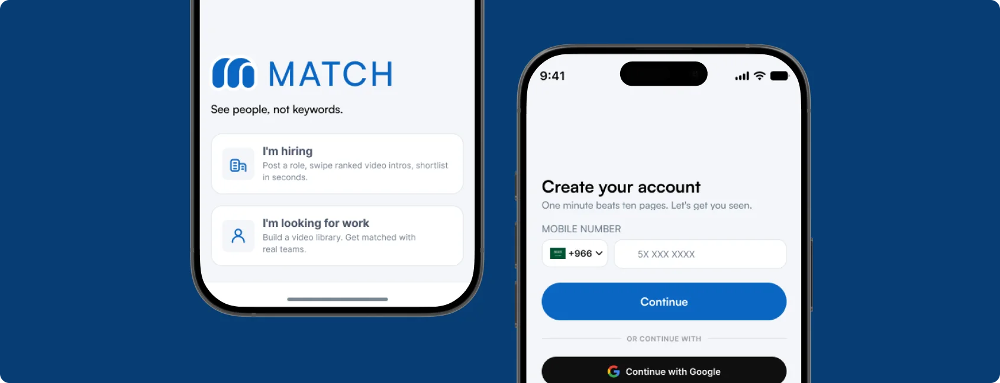
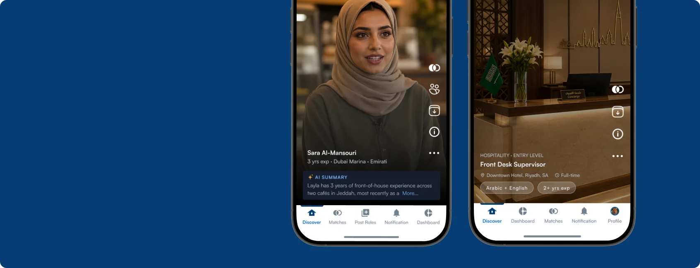
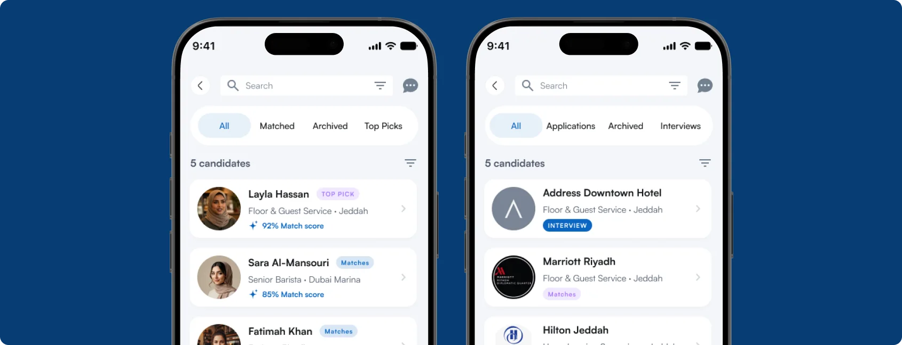
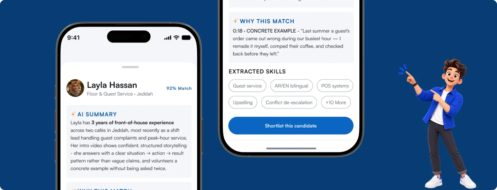
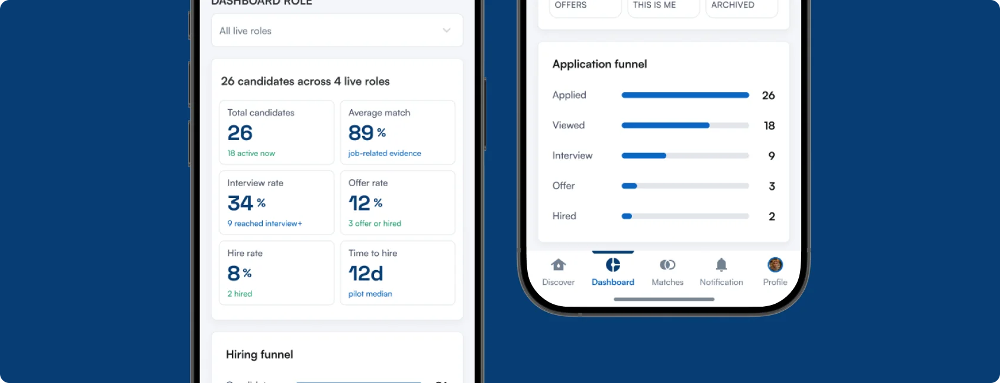

See people, not keywords.
A two-sided hiring app where AI narrows the field and a human always makes the call.

Too many applicants, too little truth
A single frontline job post can pull in hundreds of near-identical applicants within days. A recruiter with a stack like that doesn't read, they skim, and skimming rewards keywords over substance.
Keyword-shaped CVs
Everyone uses the same borrowed phrasing, so the CV says little about ability.
No fast way to verify
Claims go untested until someone spends 30 minutes in an interview finding out.
Strong people filtered out
Good candidates who write weak CVs are the first to be dropped.
Silence, not rejection
Most declined candidates never hear back, not even a "no".
Designing for the Gulf
Inside Match
Two doors, one app
The first screen makes the promise, then splits into "I'm hiring" and "I'm looking for work".

The feed does the reading
Every card leads with the same three things in the same order: the visual, a match percentage and an AI summary. It's mirrored exactly on both sides of the swipe.

It takes two
A right-swipe does nothing visible until the other side also says yes. A match unlocks a conversation. It never moves a candidate forward or rejects them automatically.

Reading between the lines
"Why this match" points to an exact timestamp in the video and quotes what the candidate said. The recruiter judges a real sentence, not a confidence score taken on faith.

Two dashboards, two jobs
Same visual language, different jobs: a management tool for the employer and a confidence tool for the candidate.

What stuck with me
Match is pre-launch. Early walkthroughs with hospitality recruiters were encouraging: "human decision only" read as a relief rather than a limitation.
The hardest decision wasn't a screen. It was how much power to give the AI, and I kept landing on less than it wanted.
Designing both sides of the same interaction in parallel, instead of one main user and an "also works for" afterthought, changed how I think about two-sided products.